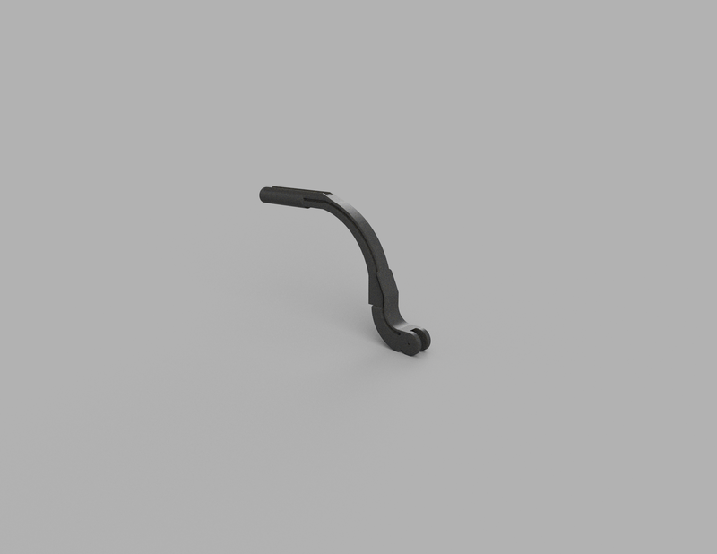
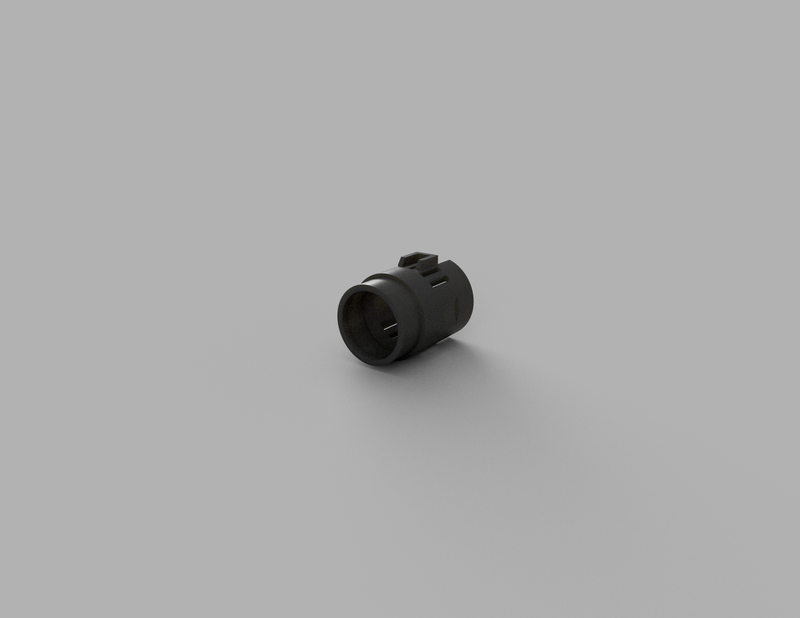

Reverse Engineering / Medical CAD
Реверс-инжиниринг узлов медицинского осветителя Dr-Kim
Высокоточное восстановление геометрии кронштейна и шарнирных сопряжений по повреждённому оригинальному образцу

Корпусной модуль фиксатора с дугой регулировки положения

Шарнирная опора с криволинейным профилем и посадочной проушиной

Цилиндрический корпус светодиода
Задача и специфика проекта
- Проблема: Механическое разрушение оригинальных пластиковых узлов крепления налобного бестеневого медицинского осветителя Dr-Kim при отсутствии возможности закупки заводских запчастей отдельно от прибора.
- Методология реверс-инжиниринга: Прецизионное снятие линейных, радиальных и угловых размеров с повреждённых фрагментов детали с последующей реконструкцией исходной параметрической модели в CAD.
Инженерные решения и моделирование
- Реконструкция сложной органической кривизны: Точный перенос дугообразных направляющих с переменным сечением для сохранения заводской эргономики посадки прибора на оголовье.
- Прецизионные сопряжения: Моделирование шарнирных узлов с учётом посадок под штифты, упорные буртики и направляющие пазы с соблюдением минимальных зазоров для исключения люфтов при регулировке света.
- Тонкостенные замковые элементы: Проектирование упругих защёлок (snap-fit) и замков на цилиндрической ответной втулке для быстросъёмной фиксации узла.
- Оптимизация под изготовление: Геометрия подготовлена для мелкосерийного воспроизводства (инженерная FDM / SLA-печать термостойкими износостойкими фотополимерами и пластиками).
Инструменты и компетенции